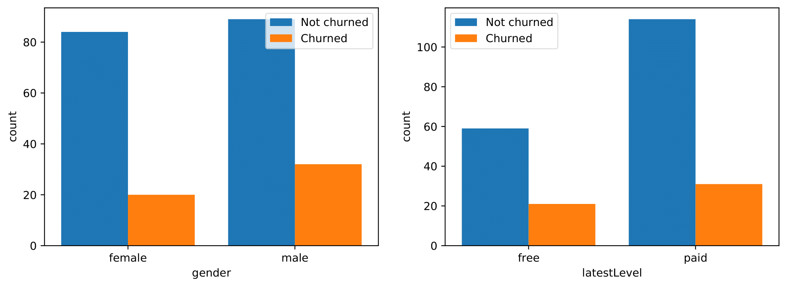
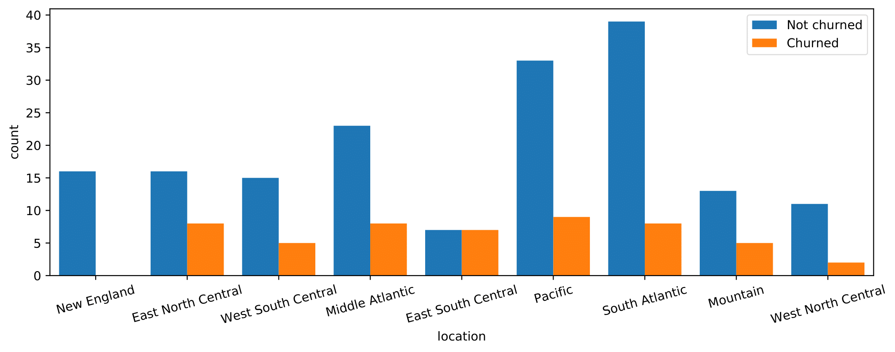

Predicting customer churn is a challenging and common problem for any e-commerce business in which everything depends on the behavior of customers. Customer churn is often defined as the process in which the customers downgrade from premium to free tier or stop using the products or services of a business. Thus, the ability to predict which users are at risk of churning, while there is still time to offer them discounts or other incentives, will greatly help to prevent every custormer-facing business from suffering severe financial losses.
The datasets in this project are provided by Sparkify, a fictitious digital music service created by Udacity, to resemble the data sets generated by companies such as Spotify or Pandora. Millions of users stream their favorite songs through Sparkify’s platform on a daily basis, either using the free tier that places advertisements between the songs or using the premiumn subscription model which is typically ad-free by paying a monthly flat rate. Users can upgrade, downgrade or cancel their service at any time. Thus, it is crucial to ensure the users love the service. Our goal in this project is to help Spakify identify potential churn users by building and training a binary classifier so as to save the business millions in revenue.
Data is generated everytime a user interacts with the service while playing songs, logging out, liking a song with a thumbs up or adding a friend etc. The full dataset collects over 26 million records from 22277 registered users, whereas a smaller subset (mini dataset) contains 286500 records from 225 registered users with a duration of about two months. The model development proces present here is performed on the smaller subset using Python API for Spark, PySpark.
Since there is no documentation provided alongside the datasets, we first have to conduct data exploration to gain a sense of the data. A detailed description of the variables is summarized below.
| Variable | Data Type | Description |
|---|---|---|
| artist | string | artist name |
| auth | categorical | authentication level (Logged In, Logged Out, Cancelled, Guest) |
| firstName | string | user’s first name |
| gender | categorical | user’s gender (M and F) |
| itemInSession | int | log count in a given session |
| lastName | string | user’s last name |
| length | double | song’s length in seconds |
| level | string | subscription level (free and paid) |
| location | string | user’s location |
| method | categorical | http request method (GET and PUT) |
| page | categorical | type of interaction (NextSong, Home, Cancellation Confirmation, etc.) |
| registration | int | user’s registration timestamp |
| sessionId | int | session to which the log belongs to |
| song | string | song name currently being played |
| status | categorical | http status code (200, 307 and 404) |
| ts | int | timestamp of a given log |
| userAgent | string | agent used by the user to access the streaming service |
| userId | string | user identifier |
After checking null values, we notice variables with null values can be divided into two groups, i.e.:
It seems variables in each group are tied in a certain way with nulls. With more data wrangling, we find:
Based on our observations above, we only need to remove the records when the userId is an empty string. Additionally, we replace the location column by the corresponding state name to simplify the location-related analysis. If the location links to multiple states, we select the first state to represent the user’s location.
def clean_data(df):
"""Clean a Sparkify dataset in the form of the Spark dataframe
Args:
df: a Sparkify dataset
Returns:
df: a preprocessed Sparkify dataset
"""
# remove user id with empty strings
df = df.filter(col('userId') != '')
# convert 'registration' and 'ts' to date format
df = df \
.withColumn('registrationTime', to_timestamp(col('registration')/1000)) \
.withColumn('time', to_timestamp(col('ts')/1000))
# replace location with first listed state
state_udf = udf(lambda x: x.split(', ')[1].split('-')[0])
df = df.withColumn('location', state_udf('location'))
return dfWe use the Cancellation Confirmation events of the page column to define the customer churn.
# create a window partitioned by 'userId'
userWindow = Window.partitionBy('userId').orderBy('ts').rangeBetween(Window.unboundedPreceding,Window.unboundedFollowing)
# label churned users to be 1 and unchurned users to be 0
df = df \
.withColumn('Churn', when(col('page')=='Cancellation Confirmation', 1).otherwise(0)) \
.withColumn('Churn', max('Churn').over(userWindow))By this definition, there are 52 churned users in a total of 225 users in the dataset. That is about 23.1% churn rate. Next, we investigate the following factors of interest for their impact on churn:
In this list, gender and location represent a user’s demographic information. We notice Spakify’s users reside across 41 states. If we one hot encode the location feature, we will add 40 binary columns to a dataset with only 225 samples, which may potentially cause the curse of dimensionality. To address this issue, we replace each state by its corresponding geographical division (data source: https://www2.census.gov/geo/pdfs/maps-data/maps/reference/us_regdiv.pdf) so that 41 states are assigned to 9 divisions.
region_df = spark.read.csv('us_regions.csv', header=True)
# find the user's geographical division based on the location
division_udf = udf(lambda x: 'location' + x.replace(' ', ''))
location_df = df.select(['userId', 'location']).dropDuplicates(['userId'])
location_df = location_df.join(region_df, location_df['location']==region_df["State Code"], how='left') \
.select(['userId', col("Division").alias("location")]) \
.withColumn('location', division_udf('location'))
# one hot encode the 'location' column by pivoting it
location_df = location_df.groupBy('userId').pivot('location').agg(count('location').cast(IntegerType())).fillna(0)
# remove the last column (or any one) to keep the binary columns independent
location_df = location_df.drop(location_df.columns[-1]) Now we engineer the rest of the features, all of which are related to a user’s behavior.
# find the latest level of each user
df = df.withColumn('latestLevel', last(col('level')).over(userWindow))
# calculate the duration between registration to last activity (in days)
regist_duration_df = df.groupBy('userId') \
.agg(((last(col('ts'))-last(col('registration')))/1000/3600/24).alias('registDuration'))
# compute average session duration (in hours)
avg_session_duration_df = df \
.groupby(['userId', 'sessionId']).agg(min(col('ts')).alias('session_start'), max(col('ts')).alias('session_end'))\
.groupby('userId').agg(avg((col('session_end') - col('session_start'))/1000/3600).alias('avgSessionDuration'))
# define the default start and end of the observation period
obs_start_default = df.select(min(col('ts'))).collect()[0][0]
obs_end_default = df.select(max(col('ts'))).collect()[0][0]
# compute the observation period
df = df \
.withColumn('obs_start', when(col('registration') > obs_start_default, first(col('ts')).over(userWindow)) \
.otherwise(obs_start_default)) \
.withColumn('end_state', last(col('page')).over(userWindow)) \
.withColumn('obs_end', when(col('end_state') == 'Cancellation Confirmation', last(col('ts')).over(userWindow)) \
.otherwise(obs_end_default)) \
.withColumn('obsDays', (col('obs_end') - col('obs_start'))/1000/3600/24)
# aggregate activity statistics
user_df = df.groupBy('userId') \
.agg(first(col('Churn')).alias('Churn'), \
first(when(col('gender') == 'M', 1).otherwise(0)).alias('gender'), \
first(col('location')).alias('location'), \
first(when(col('latestLevel') == 'paid', 1).otherwise(0)).alias('latestLevel'), \
first(col('registDuration')).alias('registDuration'), \
first(col('obsDays')).alias('obsDays'), \
sum(when(col('page') == 'NextSong', 1).otherwise(0)).alias('nSongs'), \
sum(when(col('page') == 'Thumbs Up', 1).otherwise(0)).alias('nThumbsUp'), \
sum(when(col('page') == 'Thumbs Down', 1).otherwise(0)).alias('nThumbsDown'), \
sum(when((col('page') == 'Upgrade') | (col('page') == 'Submit Upgrade'), 1).otherwise(0)).alias('nUpgrade'), \
sum(when((col('page') == 'Downgrade') | (col('page') == 'Submit Downgrade'), 1).otherwise(0)).alias('nDowngrade'), \
sum(when(col('page') == 'Add Friend', 1).otherwise(0)).alias('nAddFriend'), \
sum(when(col('page') == 'Add to Playlist', 1).otherwise(0)).alias("nAddPlaylist"), \
sum(when(col('page') == 'Roll Advert', 1).otherwise(0)).alias('nAdvert'), \
sum(when((col('page') == 'Help'), 1).otherwise(0)).alias('nHelp'), \
sum(when((col('page') == 'Error'), 1).otherwise(0)).alias('nError')) \
.join(location_df, on='userId') \
.join(regist_duration_df, on='userId') \
.join(avg_session_duration_df, on='userId')
user_df = user_df \
.withColumn('avgDailySongs', col('nSongs') / col('obsDays')) \
.withColumn('avgDailyThumbsUp', col('nThumbsUp') / col('obsDays')) \
.withColumn('avgDailyThumbsDown', col('nThumbsDown') / col('obsDays')) \
.withColumn('avgDailyUpgrade', col('nUpgrade') / col('obsDays')) \
.withColumn('avgDailyDowngrade', col('nDowngrade') / col('obsDays')) \
.withColumn('avgDailyAddFriend', col('nAddFriend') / col('obsDays')) \
.withColumn('avgDailyAddPlaylist', col('nAddPlaylist') / col('obsDays')) \
.withColumn('avgDailyAdvert', col('nAdvert') / col('obsDays')) \
.withColumn('avgDailyHelp', col('nHelp') / col('obsDays')) \
.withColumn('avgDailyError', col('nError') / col('obsDays')) \
.drop('userId', 'obsDays', 'nSongs', 'nThumbsUp', 'nThumbsDown', 'nUpgrade', 'nDowngrade', \
'nAddFriend', 'nAddPlaylist', 'nAdvert', 'nHelp', 'nError') 
An overall look at the first three categorical feaures indicates:
By comparing the numerical feature distributions between churned users and unchurned ones, we have the following observations:
Before we start modeling, we also need to understand the correlation between the response variable and the features as well as the correlation between the features. The Correlation function in the ml.stat subpackage requires a column of type Vector. Thus, we need to convert the columns into a vector column first and then apply the correlation.
vec_col = 'corr_features'
# assemble all vector columns into one vector column
assembler = VectorAssembler(inputCols=user_df.columns, outputCol=vec_col)
corr_df = assembler.transform(user_df).select(vec_col)
# compute the correlation between 'churn' and every feature and the correlation between each pair of features
corr_mat = Correlation.corr(corr_df, vec_col)
# convert the corrlation matrix to a pandas dataframe with column names
corr_values = corr_mat.collect()[0][0].values
corr_mat_pd = pd.DataFrame(corr_values.reshape(-1, len(user_df.columns)), \
index=user_df.columns, columns=user_df.columns)
# plot feature correlations
sns.heatmap(corr_mat_pd, vmin=-1, vmax=1, cmap=sns.diverging_palette(240, 20, as_cmap=True),
linewidths=.5, cbar_kws={"shrink": .5}, square=True)From the heatmap above, we find
Many page event activities, such as avgDailySongs, avgDailyThumbsUp, avgDailyDowngrade, avgDailyAddFriend, avgDailyAddPlaylist and avgDailyHelp, are highly correlated. To avoid multicollinearity in the data, we only retain avgDailyAddPlaylist here (as it has the highest correlation with Churn). On the other hand, location features are weakly correlated with each other.
Churn doesn not appear to have strong correlations with any features. registDuration is negatively correlated with Churn while avgDailyAdvert has the highest positive correlation with Churn. It also shows that gender, latestLevel, avgSessionDuration and many location features all have very low correlation with Churn. This is consistent with our previous findings through direct visualization. However, the Pearson correlation assumes a linear relationship, and a low correlation simply means that there is no linear relationship between these features and the response variable. The data might still have a nonlinear relationship and should be included in the modeling for now.
The code that automates the removal of highly correlated features is shown below:
# construct an adjacency matrix where high correlation (> 0.85) is labeled as 1, otherwise 0
is_high_corr = np.abs(corr_mat_pd.values) > 0.85
adj_mat = csr_matrix(is_high_corr.astype(int) - np.identity(len(user_df.columns)))
# find groups of highly correlated features by finding the connected components in the adjacency matrix
_, corr_labels = connected_components(csgraph=adj_mat, directed=False)
unique, unique_counts = np.unique(corr_labels, return_counts=True)
# get groups with size > 1
high_corr_labels = unique[unique_counts > 1]
# if there is at least one group of highly correlated features
if len(high_corr_labels) > 0:
# map the label indices of highly correlated features to their column names
print('Highly correlated features include:')
high_corr_col_dict = {}
for high_corr_label in high_corr_labels:
high_corr_col_dict[high_corr_label] = [col_name for corr_label, col_name in zip(corr_labels, user_df.columns)
if corr_label == high_corr_label]
print(high_corr_col_dict[high_corr_label])
print('\nFeatures to keep:')
cols_to_drop = []
for col_name_list in high_corr_col_dict.values():
# keep the feature that has the highest correlation with 'Churn'
col_to_keep = corr_mat_pd.loc[col_name_list,'Churn'].idxmax()
print(col_to_keep)
# remove the other features to avoid multicollinearity
col_name_list.remove(col_to_keep)
corr_mat_pd.drop(index=col_name_list, columns=col_name_list, inplace=True)
cols_to_drop.extend(col_name_list)
model_df = user_df.drop(*cols_to_drop)Now a total of 10 binary features and 7 numerical features are ready for modeling as inputs.
We first randomly split the entire dataset into a training and a test set in 8:2 ratio using stratified sampling based on Churn.
# split the data into train, validation and test sets using stratified sampling based on 'Churn'
train = model_df.sampleBy('Churn', fractions={0: 0.8, 1: 0.8}, seed=2020)
test = model_df.subtract(train_val)Three binary classifiers supported in Spark are selected as candidate models: logistic regression, random forest classifier and gradient-boosted tree classifier. Both random forest and gradient-boosted techniques employ an ensemble of decision trees (base estimators) to improve the predictive capability over a single estimator. The difference is random forest builds several estimators independently and then average their predictions, while gradient-boosted tree buils base estimators sequentially to generate a powerful ensemble.
For each binary classifier, we build a pipeline to facilitate the machine learning workflow and prevent data leakage.
num_cols = [field.name for field in model_df.schema.fields if field.dataType != IntegerType()]
bin_cols = [col for col in model_df.columns if col not in num_cols + ['Churn']]
# assemble numerical columns to a single vector column
num_assembler = VectorAssembler(inputCols=num_cols, outputCol='num_features')
# scale each numberical feature within the range [0,1]
scaler = MinMaxScaler(inputCol='num_features', outputCol='scaled_features')
# assemble all vector columns into one vector column
assembler = VectorAssembler(inputCols= bin_cols + ['scaled_features'], outputCol='features')
# logistic regression
lr = LogisticRegression(featuresCol='features', labelCol='Churn')
pipeline_lr = Pipeline(stages=[num_assembler, scaler, assembler, lr])
# random forest classifier
rf = RandomForestClassifier(featuresCol='features', labelCol='Churn', seed=2020)
pipeline_rf = Pipeline(stages=[num_assembler, scaler, assembler, rf])
# gradient-boosted tree classifier
gb = GBTClassifier(featuresCol='features', labelCol='Churn', seed=2020)
pipeline_gb = Pipeline(stages=[num_assembler, scaler, assembler, gb])We choose to use the f1 score as a performance metric since our dataset is imbalanced. The f1 score is the harmonic mean of the precision and recall. Spark’s MulticlassClassificationEvaluator module in the ml.evaluation subpackage only provides weighted f1 score, precision and recall metrics. For an imbalanced dataset dominated by the negative class, the weighted metrics will inflate the corresponding metrics from the positive class which we are more interested in. For this reason, we employ the MulticlassMetrics module from Spark’s mllib.evaluation subpackage to calculate these metrics for each class. Another metric we look at is the area under the precision-recall curve (AUC-PR). For binary classifier evaluation, precision-recall curves are more useful in practice than the receiver operating characteristic (ROC) curves for problems where the “positive” class is more of interest than the negative class. See: http://pages.cs.wisc.edu/~jdavis/davisgoadrichcamera2.pdf
def print_metrics(pred, label='Churn'):
"""Print evaluation metrics on a test set
Args:
pred: (spark dataframe) a test set
Returns:
summary: (pandas dataframe) a summary of evaluation metrics
"""
eval_metrics = {}
# compute area under PR curve
evaluator = BinaryClassificationEvaluator(labelCol=label)
auc_pr = evaluator.evaluate(pred, {evaluator.metricName:'areaUnderPR'})
# compute precision, recall and f1 score
predictionAndLabels = pred.select('prediction', label)
# both 'prediction' and label in predictionAndLabels need to be cast to float type and
# map to tuple before calling 'MulticlassMetrics'
metrics = MulticlassMetrics(predictionAndLabels.rdd.map(lambda x: tuple(map(float, x))))
# get overall statistics
eval_metrics['overall'] = [metrics.weightedPrecision, metrics.weightedRecall, \
metrics.weightedFMeasure(), auc_pr]
# get statistics by class
classes = [0.0, 1.0]
for cls in classes:
eval_metrics['class ' + str(int(cls))] = [metrics.precision(cls), metrics.recall(cls), \
metrics.fMeasure(cls), '']
# convert to a pandas dataframe for display
summary = pd.DataFrame.from_dict(eval_metrics, orient='index', \
columns=['precision', 'recall', 'f1 score', 'AUC-PR'])
return summaryThe search spaces of hyperparameters for the three models are listed below:
We perform a grid search with 4-fold cross validation to test the performance of these hyperparameter combinations measured by AUC-PR. An advantage of using AUC-PR is that one does not need to worry about optimizing the probability threshold that splits the model outputs into positive and negative predictions, as it summarizes the model performance over all possible thresholds.
# set hyperparameters for tuning
paramGrid = ParamGridBuilder() \
.addGrid(rf.numTrees, [20, 100, 200]) \
.addGrid(rf.maxDepth, [4, 5]) \
.build()
# grid search with cross validation
crossval_rf = CrossValidator(estimator = pipeline_rf,
estimatorParamMaps = paramGrid,
evaluator = BinaryClassificationEvaluator(labelCol='Churn', metricName='areaUnderPR'),
numFolds = 4)
cv_rf = crossval_rf.fit(train)
test_prediction = cv_rf.transform(test)
print_metrics(test_prediction)The results obtained on the test set from the best model of each classifier are summarized in the table below:
| Classifier | Parameters | Precision | Recall | F1 score | AUC-PR | |||
|---|---|---|---|---|---|---|---|---|
| Overall | Churned | Overall | Churned | Overall | Churned | |||
| Logistic regression | maxIter=10, regParam=0.1, elasticNetParam=0.5 | 0.85 | 1.00 | 0.82 | 0.20 | 0.77 | 0.33 | 0.72 |
| Random forest classifier | maxDepth=4, numTrees=100 | 0.86 | 0.75 | 0.86 | 0.60 | 0.86 | 0.67 | 0.77 |
| Gradient-boosted tree classifier | maxDepth=5, maxIter=100 | 0.77 | 0.43 | 0.73 | 0.60 | 0.74 | 0.50 | 0.65 |
It shows that the random forest classifier outperforms both the logistic regression model and the gradient-boosted tree classifier in almost all categories with an overall f1 score of 0.86 and AUC-PR of 0.77. As aforementioned, the features and the response variable do not follow a linear relationship, which might suggest that a non-linear model will be more suited to the data. Based on the solid performance on the mini dataset, we decide to use random forest classifier for future training.
To gain a better understanding of the feature attributes to the model in predicting user churn, we extract feature importances from the trained model.
features = bin_cols + num_cols
importances = list(cv_rf.bestModel.stages[-1].featureImportances)
feat_imp_pd = pd.DataFrame({'feature': features, 'importance': importances}).sort_values('importance', ascending = False)
# plot feature importance
sns.barplot(data=feat_imp_pd.head(15), y="feature", x="importance", palette='Blues_r', zorder=2)
plt.grid(axis='x', linestyle='--', zorder=0)
plt.ylabel('');It can be seen that the most important feature for identifying churned users is the registration duration which makes sense since it directly reflects a user’s willness to stay with the service. Another influential feature that plays a major role in churn prediction is avarage daily advertisements. Intuitively, the more advertisements a user has to watch, the more likely he/she is dissatisfied with the service. Besides, average upgrades and thumbs down given per day that represent a user’s strong inclination also help churn detection.
The result also shows that gender, latest subscription level and each location feature contribute little to predicting churned users. Nevertheless, we notice that the churn rates of top location features, sch as those of New England and east south central areas are far different from the average churn rate.
We apply the scalable machine learning pipeline we have developed here to the full Sparkify dataset. The task is carried out on an Amazon Elastic MapReduce (EMR) cluster. With more training data, the search space of maximum tree depth and number of trees for the random forest classifier is adapted to [8, 10] and [100, 200], respectively.
A key insight from the study on the mini dataset is that the attributions of gender, latest subscription level and location features are negligible to model prediction. We test this finding on the full dataset, and the model trained without these features achives practically the same performance as the model including these features with a reduction of ~40% training time. The results evaluated on the test set of the full dataset from the best random forest model are given below:
| Classifier | Parameters | Precision | Recall | F1 score | AUC-PR | |||
|---|---|---|---|---|---|---|---|---|
| Overall | Churned | Overall | Churned | Overall | Churned | |||
| Random forest classifier | maxDepth=10, numTrees=100 | 0.92 | 0.93 | 0.91 | 0.64 | 0.91 | 0.76 | 0.89 |
We can see that there are sizeable performance gains in every metric category due to more training data. At a default probability threshold of 0.5, our model is currently able to identify 64% of user churn and 7% identified as churned users acutally satisfy with the service. If deployed, the trained model could be used to predict users inclined to churn in advance, and we can provide them with special offers in the hope of keeping them from deleting their Sparkify accounts. If we want to target more users prone to churning, we can lower the probability threshold, and a high AUC-PR score of 0.89 will allow us to maintain a high precision that there will not be many more users with no intent of churning mistakenly targeted.
In this project, since the dataset is relatively clean, the most critical step in the model development process is feature engineering. It has been proved most of the engineered features based on users’ behaviors play vital roles in churn prediction rather than users’ demographical information (e.g., gender and location). This also suggests that we can take more actions towards users’ behaviors aside from providing coupons. For example, our study shows churned users receive more daily advertisements on average. Accordingly, we should reduce the amount of advertisements for those who are likely to churn. Meanwhile, it is necessary to conduct A/B tests to statistically assess benefits vs. costs by such actions.
For further imporvements, we should experiment with more engineered features that capture the insights about users’ activity patterns and trends. In addtion, we can apply principle component analysis (PCA) to input features before feeding them to training. PCA allows us to reduce the number of features and decorrelate them, which often helps to improve the performance of the model downstream.